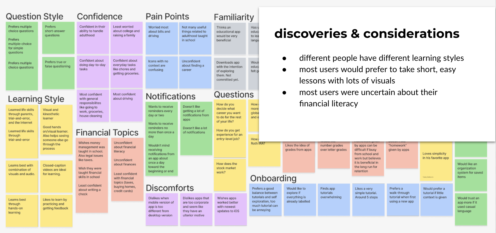
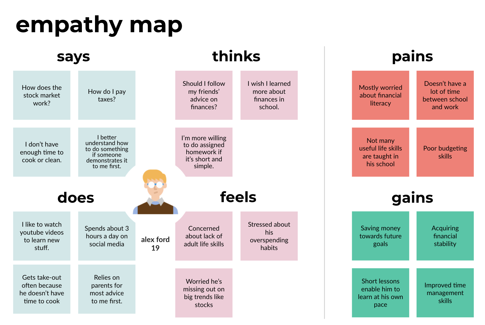
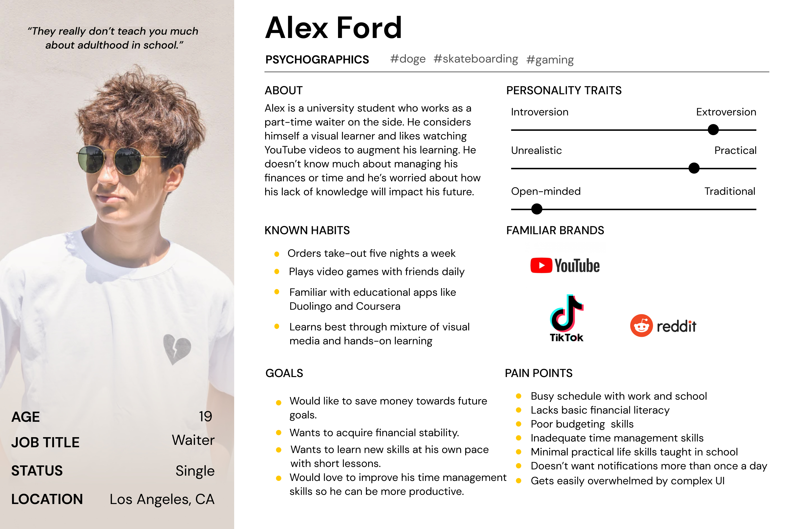
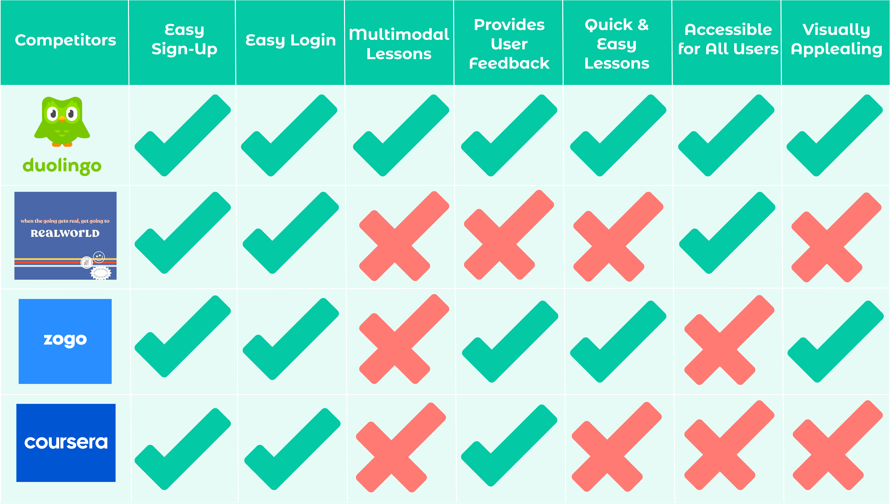
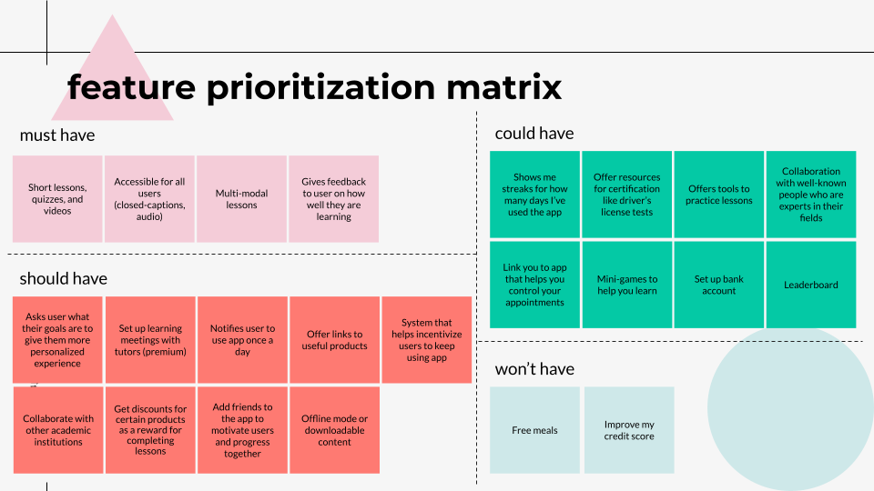
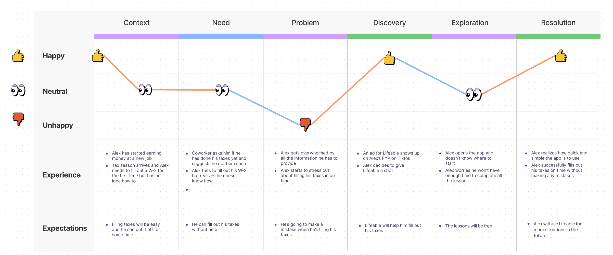
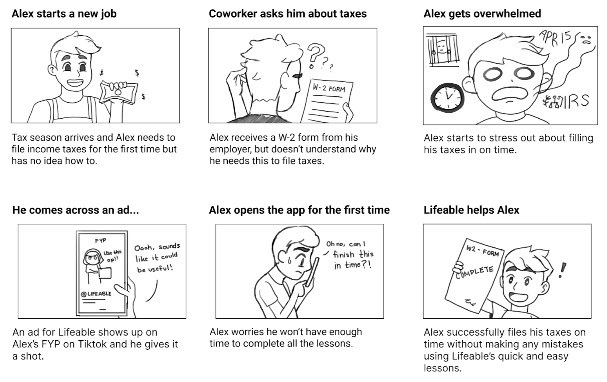
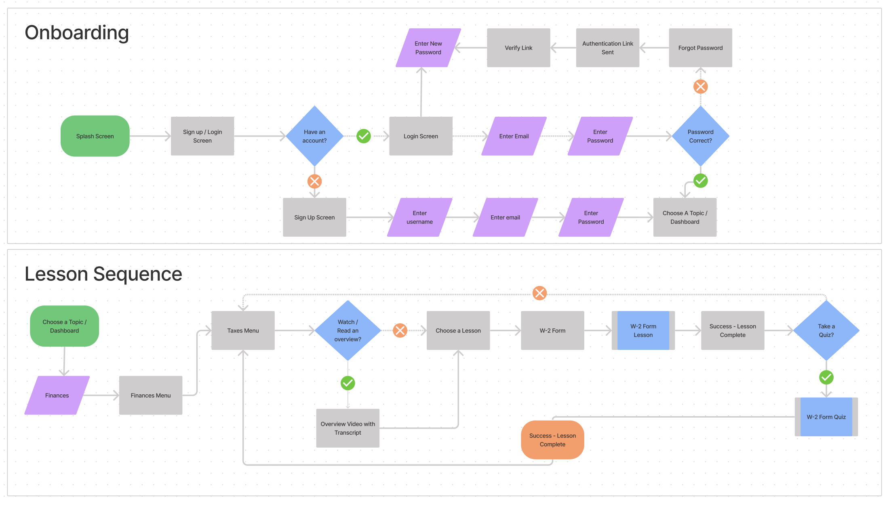
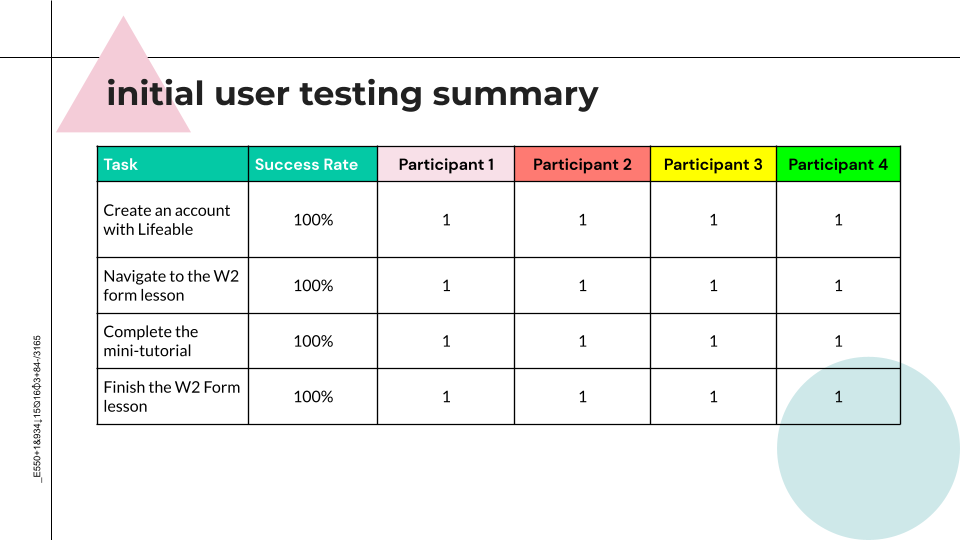

Contact

I worked with a team to create a prototype for an educational app for young people to learn basic life skills they may not otherwise have access to. To entice users to return to the app and continue with their lessons, we gamified the process.
Teens and young adults need a way to learn essential life skills not taught to them in educational institutions. During our research, we found that most young adults did not feel confident about their ability to navigate adulthood, especially when it came to financial topics such as filing taxes or securing a mortgage.
My team created a mobile app that provides young users with quick and easy lessons that teach essential life skills from a broad range of topics such as finances, domestic skills, self-care, relationships, and career training.
UI Designer
UX Researcher
4 UX/UI Designers
2 weeks
June 2021

We began our research by imagining a user that represented the audience for our app. Our target demographic was people below the age of 23 who were feeling overwhelmed by the responsibilities of adulthood. We considered lifestyle as well. How could we make our app more convenient for young adults with little free time on their hands?
To gain some more insight into our target demographic, we gathered five people that fit our requirements and scheduled interviews with them. Some questions we asked were:
In addition to the interviews, we also released a Google Survey with five short-answer questions.
"I wish I was more financially literate about things like investing and making big purchases."
– Christine, 21
“I like apps… that show a quick video and then have me do the task myself."
– Zach, 16
"I feel like I should be keeping more track of my budget."
– Theo, 20
"Adulthood in general, really you’re not taught much [in school]."
– Bryan, 22
Out of 21 participants surveyed...
71% did not feel confident in their ability to navigate adulthood
62% were most concerned about financial topics
67% used the internet to research topics they did not understand
We summarized all our findings from the interviews and survey into an affinity diagram.
Based on our findings from the user interviews, we created an empathy map to better visualize our users' needs.
Finally, our research coalesced into a user persona that was based on facts and data rather than our assumptions. We paid more attention to the persona's learning style and took more potential pain points into consideration.
We conducted a competitor analysis on four different products to see how Lifeable could potentially outdo its competitors. To our surprise, there was only one app on the market that shared similarities with ours, called Realworld, and it had several areas that could be improved upon. Pictured below is a chart that offers a condensed version of our analysis.
After brainstorming several different features our app could have, our team sorted each feature onto a feature prioritization matrix. To be able to launch, our app had to have, at minium, short, multi-modal lessons, quizzes, and videos, accessibility for all users, and a way to provide users with feedback on how well they were learning.
In order to demonstrate our final prototype we needed to figure out a task for the user to perform. Using our user persona, Alex, we imagined a scenario where he had started earning money at a new job and had to fill out a W-2 for the first time, without any clue where to begin. We charted out Alex's feelings on a user journey map...
...and then I drew them out onto a storyboard.
With both the user journey map and the storyboard completed, it was time to draw out the user flow for our scenario. I created two user flows, one for the Lifeable onboarding process, and one for the Lesson Sequence.
I designed the low-fidelity wireframes with a partner. At this stage the challenge was trying to figure out how to break down a W2 Form into easily digestible sections. We solved this by separating an image of the form into different sections.


We tested our low-fidelity prototype out on four participants and received a 100% success rate. However, there were still some issues that needed to be fixed such as resizing the buttons and the pop-ups. We implemented these in the next iteration.



(May take a moment to load. Please view in full screen.)
This was my first time working in a team to create a case study and the end result was better than I expected. I learned a lot about communicating my ideas with other people, mediating debates, coming to compromises, and knowing when it was time to move forward rather than dwell on a topic for too long. Through constant deliberation and different voting methods, we were able to resolve our different opinions again and again with successful results. Our trust as a team grew and so did our confidence.